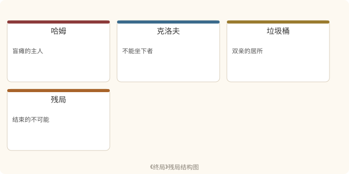

终局
一、基本信息
| 作者 | 贝克特 |
|---|---|
| 成书/出版 | 1957年（作者页 B094 口径：终局（1957）） Samuel Beckett — Encyclopaedia Britannica (by Martin J. Esslin)（百科全书） |
| 国别/地区 | 爱尔兰 |
| 时代 | 现当代 · 20世纪 |
| 体裁 | 戏剧 |
| 语言 | 法语 |

《终局》残局结构图（主题·结构图）
二、创作背景
作者页（B094）：贝克特 major_works 载'终局（1957）、快乐的日子（1961）、莫洛伊三部曲（1947—50）'（B094 作者页定位，详见 dengdaigou 条核对）。
场景（通说）：灰暗室内——坐轮椅的哈姆与站立的仆人克洛夫，双亲纳格与奈尔在垃圾桶里。
三、内容脉络
哈姆与克洛夫的'日常'：报时、喂食、无法结束的结束（通说待核）。
四、主要人物表
| 人物 | 身份 | 说明 |
|---|---|---|
| 哈姆 | 盲瘫的主人 | （通说待核） |
| 克洛夫 | 仆人 | 不能坐下者（通说待核） |
五、主题与艺术特点
- '终局'：棋局的残局隐喻（通说）。
- 依赖与虐待的共生（通说待核）。
- 结束的不可能（通说）。
六、影响与评论
- 作者页：贝克特戏剧谱系（B094 作者页口径）。
Samuel Beckett — Encyclopaedia Britannica (by Martin J. Esslin)（百科全书） - 与《等待戈多》并列为荒诞剧双璧（通说待核）。
Samuel Beckett — Encyclopaedia Britannica (by Martin J. Esslin)（百科全书）
七、阅读建议
难点
- 对话的循环结构。
- '残局'隐喻。
- 《终局》（湖南文艺出版社《贝克特选集》，通说待核）。
- 法文原版（Minuit）。
先《等待戈多》后本作。
八、待核实
- 1957年伦敦首演（Royal Court说）核对。
- 哈姆/克洛夫/纳格/奈尔人名核对。
- '残局'棋语核对。